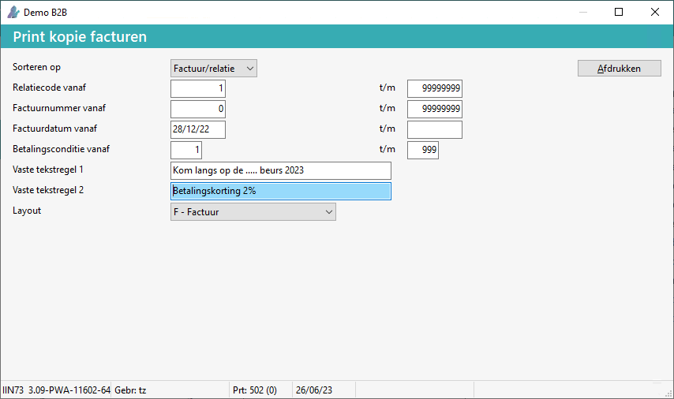

De vaste tekstregel 1 en 2 moeten op de betreffende factuur lay-out staan.
Tip: Indien deze tekstregels niet op de factuur lay-out staan kunt u deze velden SYS330 en SYS340 toevoegen in de 'factuur voet' zie Lay-out wijzigen.
Om de twee tekstregels op de factuur te wijzigen, doorloopt u de volgende stappen:
Ga naar Kopie facturen (FFK) of Print facturen (FFK).
Het scherm Print (kopie) facturen verschijnt.
Wijzig bij Vaste tekstregel 1 en 2 de <factuurtekst(en)>.

Indien nodig wijzig het t/m relatiecode naar 1, anders worden alle facturen afgedrukt.
Kies voor de knop Afdrukken.
De facturen worden getoond.
Opmerking: De factuurteksten worden pas opgeslagen bij het gebruik van de knop Afdrukken.
Sluit de facturen.
Sluit Print (kopie) facturen.
De factuurtekstregels zijn opgeslagen en worden getoond bij alle opties van het menu Factureren.
Copyright ©